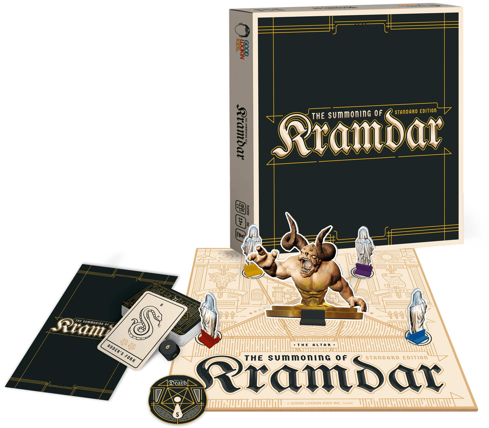

-
Number of Players
2-4
-
Suggested Age
13+
-
Playing Time
30min
The end is nigh and
Kramdar is Hungry
When hell is on earth and the plagues are a plenty the only salvation is Kramdar. Make offerings when the moon is highest in the sky to satisfy Kramdar’s appetite - but be warned; If you have nothing to give, Kramdar will take a piece of your life force until nothing is left.
NOW AVAILABLE IN THE GLKSHOP!
Buy the Game!